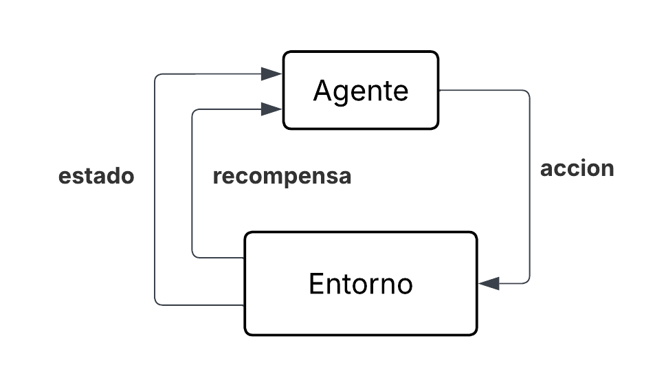

Dentro del machine learning existen tres grandes categorías: supervisado, no supervisado y por refuerzo. El supervisado usa datos etiquetados; el no supervisado busca patrones sin etiquetas. El Aprendizaje por Refuerzo (RL) se basa en el principio de prueba y error, similar a cómo aprenden los humanos.
Su objetivo no es clasificar o agrupar, sino maximizar una señal de recompensa numérica a lo largo del tiempo. El agente interactúa con un entorno, toma decisiones y recibe retroalimentación (recompensas o penalizaciones) que le permiten mejorar su estrategia.
Relevancia actual: El RL es clave en sistemas autónomos, robótica, juegos, finanzas y cualquier dominio que requiera adaptación en tiempo real a entornos cambiantes.

El RL se estructura en torno a los siguientes elementos clave, según la definición del informe:
Es la entidad que aprende y toma decisiones. Su límite está definido por su capacidad de control directo; todo sistema que el agente no pueda modificar arbitrariamente se considera externo a él.
Representa todo aquello externo al control del agente. Es el sistema que reacciona a las acciones ejecutadas, devolviendo nuevas situaciones (estados) y señales de evaluación (recompensas).
Es la representación de la situación actual del entorno en un instante discreto t, denotado como St ∈ S. Puede ir desde lecturas sensoriales básicas hasta descripciones abstractas complejas.
Es la decisión ejecutada por el agente, At ∈ A(s), en respuesta al estado actual. El conjunto de acciones disponibles puede depender del estado.
Señal numérica (Rt ∈ R) enviada por el entorno que evalúa el éxito de una acción. Define la meta del problema: el objetivo único del agente es maximizar su acumulación a largo plazo. Informa qué se debe lograr, no cómo.
Es la estrategia que dicta el comportamiento del agente. Formalmente, π(a|s) denota la probabilidad de seleccionar la acción At = a dado que el entorno se encuentra en el estado St = s.
El proceso de aprendizaje se basa en la interacción continua entre el agente y su entorno. En cada instante t, el agente observa su estado actual (St) y ejecuta una acción (At). Como respuesta, el entorno transita a un nuevo estado (St+1) y emite una recompensa o penalización (Rt+1). Al carecer de instrucciones explícitas sobre qué acciones son correctas, el agente aprende mediante ensayo y error, ajustando su comportamiento para favorecer las decisiones que resultan rentables a largo plazo.
Este proceso iterativo permite al agente construir gradualmente una política que maximiza la señal de recompensa. La clave está en que el agente no solo considera el beneficio inmediato, sino que también evalúa las consecuencias futuras de sus acciones, lo que le permite planificar y adaptarse a entornos dinámicos.
Para optimizar el aprendizaje, el sistema debe resolver un equilibrio fundamental:
Este equilibrio se gestiona habitualmente con la estrategia ε‑greedy, donde el agente explora al azar con una probabilidad ε y explota su conocimiento con probabilidad 1−ε. Conforme el agente va adquiriendo experiencia, la tasa de exploración ε se reduce gradualmente, permitiendo que el agente se centre en explotar el conocimiento ya adquirido.
El objetivo final del agente no es maximizar la recompensa inmediata, sino el retorno acumulado descontado a lo largo del tiempo, definido como:
Donde el factor de descuento γ (0 ≤ γ < 1) es un parámetro clave que define la “visión futura” del sistema. Un valor de γ cercano a 1 otorga un peso casi igual a las recompensas futuras, lo que permite al agente planificar a largo plazo y tomar decisiones que maximicen el beneficio total. Por el contrario, un γ cercano a 0 hace que el agente sea cortoplacista, enfocándose únicamente en la recompensa inmediata (Rt+1) y descartando prácticamente las consecuencias futuras de sus acciones.
La elección de γ depende del problema: en tareas donde el agente necesita actuar con previsión (por ejemplo, gestión de inventarios o planificación financiera), se prefiere un γ alto. En problemas donde las acciones tienen efectos inmediatos y el entorno cambia rápidamente, un γ bajo puede ser más adecuado para evitar planes excesivamente largos que se vuelvan obsoletos.
El algoritmo Q‑Learning destaca como uno de los métodos más implementados en el aprendizaje por refuerzo, ya que:
El núcleo de este algoritmo consiste en estimar una función de valor de acción, denominada función Q (Q(St, At)). Esta función proyecta el beneficio total que se espera obtener si, estando en un estado St, se ejecuta una acción At y, a partir de ese momento, se siguen tomando las mejores decisiones posibles. Cuando el escenario presenta un número limitado y discreto de estados y acciones, esta función se materializa en una estructura matricial conocida como Tabla Q (Q‑table), la cual actúa como la “memoria” del agente.
Los valores almacenados en esta tabla son actualizados continuamente luego de cada interacción entre el agente y el entorno. Para ello, se emplea una adaptación de la Ecuación de Bellman basada en el método de diferencias temporales:
Cada término de la ecuación cumple un rol específico en el ajuste del conocimiento del agente:
Convergencia: conforme el agente acumula experiencia a través de un número suficiente de iteraciones, los valores dentro de la Tabla Q convergen progresivamente hacia los valores reales óptimos, siempre que se cumplan ciertas condiciones (como visitar todos los pares estado‑acción un número infinito de veces). Una vez estabilizados, el sistema puede prescindir de la exploración y actuar de forma determinista, guiándose exclusivamente por la tabla para tomar, en cada paso, la decisión que garantice el máximo rendimiento. En la práctica, esto significa que el agente habrá aprendido la política óptima y podrá utilizarla sin necesidad de seguir explorando.
En la industria financiera, la detección de transacciones fraudulentas es un desafío constante, ya que los patrones de fraude evolucionan rápidamente y se ocultan entre millones de operaciones legítimas. Para ello, el Aprendizaje por Refuerzo ofrece un enfoque altamente adaptativo. Mediante Q‑Learning, se modela un agente que aprende de manera interactiva a tomar decisiones de clasificación. A través de la experiencia continua, el agente descubre por sí mismo cómo identificar comportamientos anómalos y puede, mediante prueba y error, adaptarse a nuevas tendencias que se desarrollen en el tiempo.
El escenario financiero se traduce en los siguientes componentes:
En escenarios donde el fraude es poco probable, medir solamente la exactitud puede resultar engañoso. Por ello, el sistema de recompensas se diseña para penalizar severamente los errores de seguridad y premiar cuando el agente realiza una detección precisa:
El proceso arranca con una Tabla Q inicializada en ceros. Inicialmente, el agente utiliza una política ε‑greedy para explorar el entorno de forma aleatoria, probando distintas acciones ante diferentes perfiles. Si el agente toma una mala decisión (por ejemplo, aprueba un fraude evidente y recibe la penalización de −50), se genera un gran error en la Ecuación de Actualización de Bellman, lo que reduce drásticamente el valor de la acción “Aprobar” para ese estado o perfil específico. Conforme la tasa de exploración disminuye progresivamente, el agente se ve obligado a explotar su conocimiento acumulado. Al final de las iteraciones, la Tabla Q converge hacia una política adaptativa robusta: el agente sabrá exactamente qué patrones representan situaciones anómalas que deben ser bloqueadas y cuáles son transacciones seguras, superando con creces la rigidez de los sistemas basados en reglas estáticas.
Convergencia: gracias a la naturaleza off‑policy de Q‑Learning, el agente puede aprender la política óptima incluso mientras explora, siempre que cada par estado‑acción sea visitado un número suficiente de veces. La exploración inicial (cold‑start) es fundamental para descubrir las recompensas asociadas a cada acción, pero debe ser controlada para no provocar pérdidas excesivas en producción.
Para comprender mejor el funcionamiento interno de Q‑Learning, se ha desarrollado una simulación interactiva en un entorno de cuadrícula (Grid World). El objetivo es que un agente aprenda a moverse por un tablero de 5×5 evitando obstáculos hasta alcanzar una celda meta (la esquina inferior derecha).
¿Qué hace la simulación? El agente comienza en la esquina superior izquierda y, mediante el algoritmo Q‑Learning, va actualizando su Tabla Q a medida que explora el entorno. En cada paso, el agente elige una acción (arriba, abajo, izquierda o derecha) siguiendo una política ε‑greedy. Si la acción lo lleva a una celda válida (dentro del tablero y sin obstáculo), recibe una recompensa: −0.1 por cada paso (para incentivar la rapidez), −1 si intenta moverse a una celda inválida, y +10 si alcanza la meta. Con estos valores, la Tabla Q se actualiza aplicando la ecuación de Bellman.
Parámetros ajustables: el usuario puede modificar en tiempo real la tasa de aprendizaje (α) (qué tanto influye la nueva información), el factor de descuento (γ) (visión a corto o largo plazo), la probabilidad de exploración (ε) (cuánto explora frente a explota) y la velocidad de reproducción (para observar el proceso paso a paso o más rápido). Estos controles permiten experimentar con diferentes configuraciones y ver cómo afectan la convergencia del aprendizaje.
Visualización: en el canvas se dibuja el tablero con el agente (círculo azul), la meta (cuadrado amarillo) y los obstáculos (celdas grises). Además, se muestra una mini Tabla Q donde cada celda presenta el valor máximo de Q para ese estado, permitiendo ver cómo evoluciona el conocimiento del agente. Las estadísticas (número de episodios, pasos totales y recompensa acumulada) ofrecen una métrica del rendimiento.
Controles: los botones “Iniciar/Pausar” y “Reiniciar” permiten controlar la simulación. Al iniciar, el agente comienza a aprender y reinicia automáticamente al llegar a la meta, acumulando episodios. Esto demuestra cómo, con el tiempo, el agente aprende rutas más eficientes.
El Aprendizaje por Refuerzo supera a los sistemas de reglas estáticas gracias a su capacidad de adaptación autónoma. En detección de fraudes, Q‑Learning optimiza el balance entre seguridad y experiencia de usuario mediante un sistema de recompensas bien calibrado.
Sutton, R. S., & Barto, A. G. (2018). Reinforcement Learning: An Introduction (2ª ed.). The MIT Press.
Chanda, K. K. (2026, mayo). Q-Learning in Reinforcement Learning. GeeksforGeeks. https://www.geeksforgeeks.org/machine-learning/q-learning-in-python/
Pal, R. K., Shah, T., & Sharma, T. P. (2026). Enhancing Digital Financial Fraud Detection Using Reinforcement Learning. En 2026 13th International Conference on Computing for Sustainable Global Development (INDIACom) (pp. 1-7). DOI: 10.23919/INDIACom70271.2026.11526371